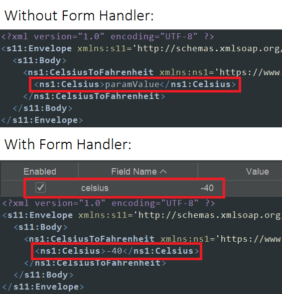

Надстройка автоматически обнаружит любые определения SOAP и просканирует их, пока они находятся в области действия.
A menu item is added to the Import menu:
Import a WSDL File
Operations to import a WSDL file from the local filesystem or from a URL are also available via the API.
ПРИМЕЧАНИЯ Начиная с версии 6 этого дополнения поддерживаются только закодированные URL-адреса.
Поддержка надстройки обработчика форм
Надстройка SOAP поддерживает переопределение значений параметров по умолчанию на основе имен полей через надстройку обработчика форм.
Например,

Latest code: SOAP Support
Статистика
Это дополнение поддерживает следующую статистику:
soap.urls.added: общее количество URL-адресов (или действий SOAP), добавленных из импортированных файлов WSDL.